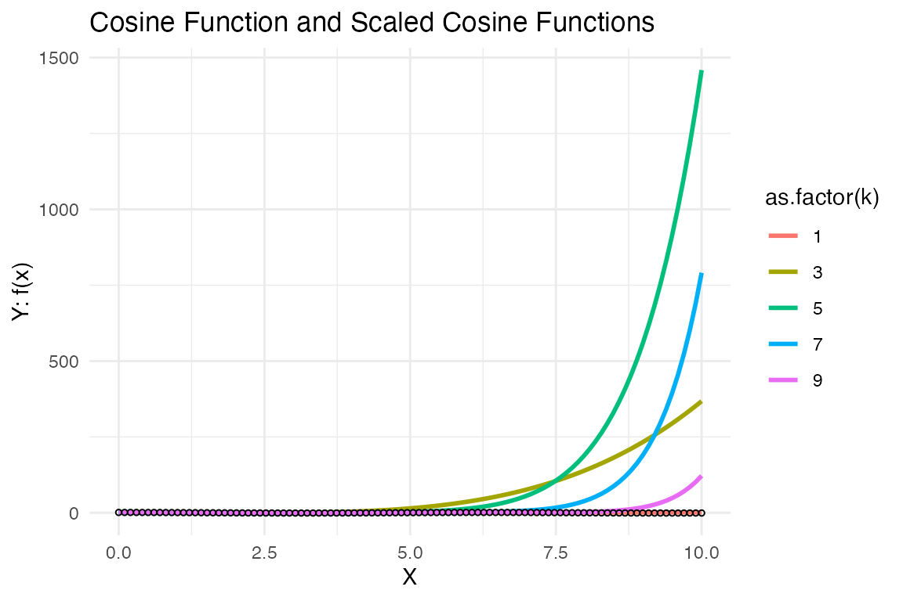
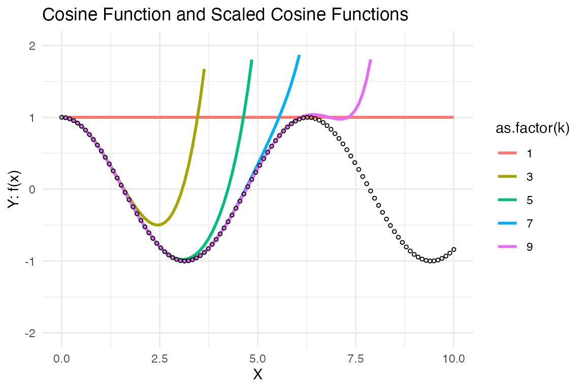
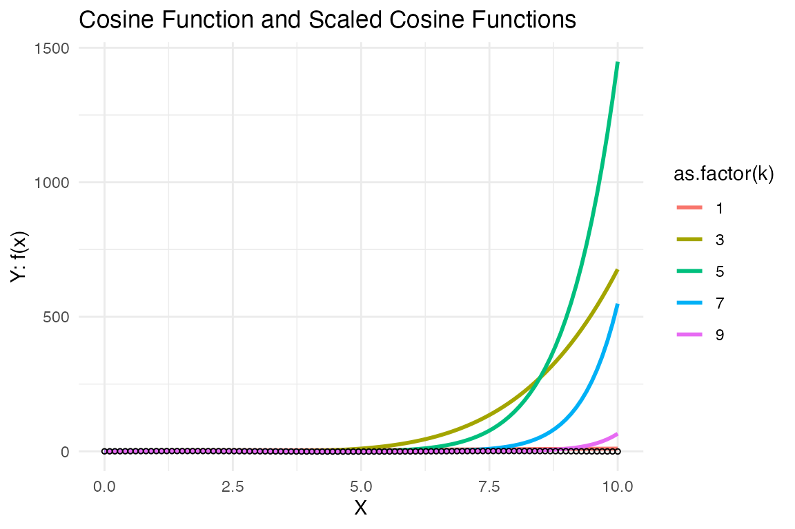
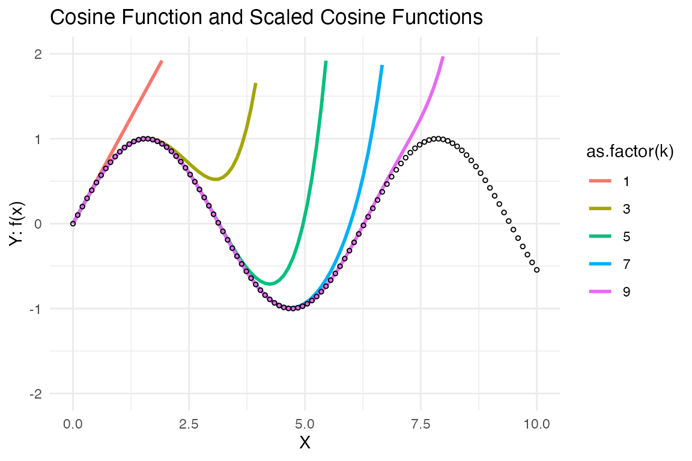
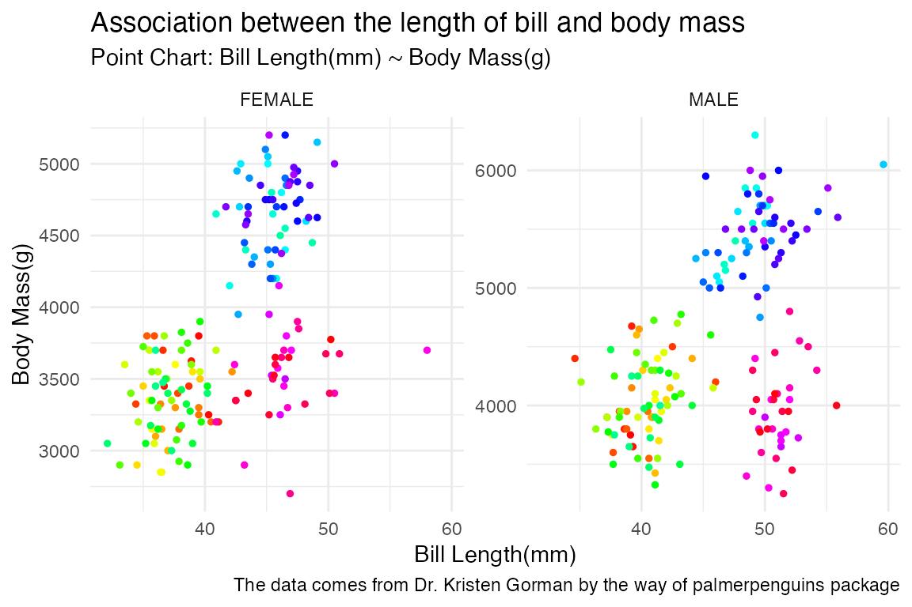
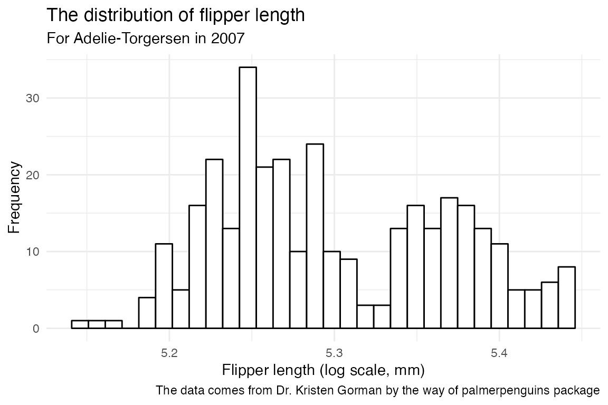
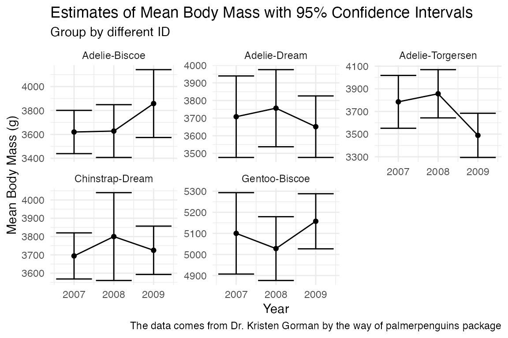

functions
functions.RmdAbstract and Introduction
In this markdown file, I will show you the characteristics of functions in this package. It can be divided into two parts: (1) the approximation features of ‘fn_cos()’ and ‘fn_sin()’. (2) the application example of ‘calculate_CI()’.
library(SunanP2)Demonstrate fn_cos(x, k)
## create the data point for the x axis as input
x <- seq(0,10, length.out=100)
## Generate data for points (cos(x))
points_data <- data.frame(x = x, y = cos(x))
## Generate data for lines (fn_cos(x, k))
k_values <- c(1,3,5,7,9)
lines_data <- expand.grid(x = x, k = k_values)
# create all combinations of the supplied vectors or factors
for (i in c(1:dim(lines_data)[1])){
lines_data$y[i] = fn_cos(lines_data$x[i], lines_data$k[i])
}Plot the graph using ggplot2 (fn_cos)
library(ggplot2)
ggplot() +
geom_line(data = lines_data, aes(x = x, y = y, color = as.factor(k)), size = 1) +
geom_point(data = points_data, aes(x = x, y = y), shape = 1, size = 1) +
#scale_color_manual(values = c("blue", "red", "green", "orange", "purple")) +
labs(title = "Cosine Function and Scaled Cosine Functions",
x = "X",
y = "Y: f(x)") +
theme_minimal()
ggplot() +
geom_line(data = lines_data, aes(x = x, y = y, color = as.factor(k)), size = 1) +
geom_point(data = points_data, aes(x = x, y = y), shape = 1, size = 1) +
#scale_color_manual(values = c("blue", "red", "green", "orange", "purple")) +
labs(title = "Cosine Function and Scaled Cosine Functions",
x = "X",
y = "Y: f(x)") +
ylim(-2,2)+
theme_minimal()
Demonstrate fn_sin(x, k)
## create the data point for the x axis as input
x <- seq(0,10, length.out=100)
## Generate data for points (cos(x))
points_data <- data.frame(x = x, y = sin(x))
## Generate data for lines (fn_cos(x, k))
k_values <- c(1,3,5,7,9)
lines_data <- expand.grid(x = x, k = k_values)
# create all combinations of the supplied vectors or factors
for (i in c(1:dim(lines_data)[1])){
lines_data$y[i] = fn_sin(lines_data$x[i], lines_data$k[i])
}Plot the graph using ggplot2 (fn_sin)
ggplot() +
geom_line(data = lines_data, aes(x = x, y = y, color = as.factor(k)), size = 1) +
geom_point(data = points_data, aes(x = x, y = y), shape = 1, size = 1) +
#scale_color_manual(values = c("blue", "red", "green", "orange", "purple")) +
labs(title = "Cosine Function and Scaled Cosine Functions",
x = "X",
y = "Y: f(x)") +
theme_minimal()
ggplot() +
geom_line(data = lines_data, aes(x = x, y = y, color = as.factor(k)), size = 1) +
geom_point(data = points_data, aes(x = x, y = y), shape = 1, size = 1) +
#scale_color_manual(values = c("blue", "red", "green", "orange", "purple")) +
labs(title = "Cosine Function and Scaled Cosine Functions",
x = "X",
y = "Y: f(x)") +
ylim(-2,2)+
theme_minimal()
Demonstrate calculate_CI(x, conf)
In this part, we will use the demo data from TidyTuesday package to deliver an data analysis example.
Research Question
- The association between body characteristics of Palmer Penguins.
- The distribution and varying trend of body characteristics of Palmer Penguins in different species and islands.
Original Data
- Data was downloaded from TidyTuesday. The original data comes from Dr. Kristen Gorman by way of the palmerpenguins R package by Dr. Kristen Gorman, Dr. Allison Horst, and Dr. Alison Hill. They’ve bundled both the raw data and the cleaned data together. Data Source
Data Dictionary
- Here is a data dictionary for what all the column names mean: data dictionary
Load the data into R
Download example data from github and save them in the local site.
if (!require("tidyverse", quietly = TRUE)) {
install.packages("tidyverse", repos = "http://cran.us.r-project.org")
}
#> ── Attaching core tidyverse packages ──────────────────────── tidyverse 2.0.0 ──
#> ✔ dplyr 1.1.2 ✔ readr 2.1.4
#> ✔ forcats 1.0.0 ✔ stringr 1.5.0
#> ✔ lubridate 1.9.2 ✔ tibble 3.2.1
#> ✔ purrr 1.0.2 ✔ tidyr 1.3.0
#> ── Conflicts ────────────────────────────────────────── tidyverse_conflicts() ──
#> ✖ dplyr::filter() masks stats::filter()
#> ✖ dplyr::lag() masks stats::lag()
#> ℹ Use the conflicted package (<http://conflicted.r-lib.org/>) to force all conflicts to become errors
if (!require("tidytuesdayR", quietly = TRUE)) {
install.packages("tidytuesdayR", repos = "http://cran.us.r-project.org")
}
if (!require("here", quietly = TRUE)) {
install.packages("here", repos = "http://cran.us.r-project.org")
}
#> here() starts at /Users/gsn/Desktop/2023-2024/【JHU】Term-2/【Core】Statistical Programming Workflow/SunanP2
if (!require("ggplot2", quietly = TRUE)) {
install.packages("ggplot2", repos = "http://cran.us.r-project.org")
}
library(tidytuesdayR)
library(here)
## Test if a directory named data exists locally. If it does not, write an R function that creates it programmatically. Saves the data only once
if (!file.exists(here("data", "tuesdata_penguins.csv"))) {
tuesdata <- tidytuesdayR::tt_load('2020-07-28')
penguins <- tuesdata$penguins
save_directory <- here("data") # File for saving data, must be created
if (!dir.exists(save_directory)) {
dir.create(save_directory, recursive = TRUE)
}
# save the files to RDS objects ()
write.csv(tuesdata$penguins, file = here("data", "tuesdata_penguins.csv"))
}
## Read in the data locally each time you knit/render
penguins <- read.csv(here("data", "tuesdata_penguins.csv"))
library(tidyverse)
library(stringr)
# 1. Start with penguins dataset and drop any rows with NAs.
penguins <- penguins %>%
drop_na()
# 2. Convert the sex names (character strings) to all upper case.
penguins <- penguins %>%
mutate(sex = str_to_upper(sex))
# 3. Create new ID column titled date that combines the species and island into one column separated by “-”. (e.g. “Adelie-island”).
penguins <- penguins %>%
unite(ID, species, island, sep = '-')
# calculate the distribution of body mass of penguins
penguins_summary <- penguins %>%
group_by(ID) %>%
summarise(
mean_mass = mean(body_mass_g),
sd_mass = sd(body_mass_g),
lower_bound = calculate_CI(body_mass_g)[1],
upper_bound = calculate_CI(body_mass_g)[2])
# calculate the distribution of body mass of penguins
penguins_summary2 <- penguins %>%
select(-bill_length_mm, bill_depth_mm, flipper_length_mm) %>%
group_by(ID, year) %>%
summarise(
mean_mass = mean(body_mass_g),
sd_mass = sd(body_mass_g),
lower_bound = calculate_CI(body_mass_g)[1],
upper_bound = calculate_CI(body_mass_g)[2])
#> `summarise()` has grouped output by 'ID'. You can override using the `.groups`
#> argument.
# combine the observed data and summarized result
penguins_combined <- left_join(penguins, penguins_summary[c('ID', 'mean_mass', 'sd_mass', 'lower_bound', 'upper_bound')], 'ID')
penguins_combined %>%
ggplot(aes(x = bill_length_mm, y = body_mass_g)) +
geom_point(aes(x = bill_length_mm, y = body_mass_g), linetype = "solid", color = rainbow(333), size = 1) +
labs(title = "Association between the length of bill and body mass",
subtitle = 'Point Chart: Bill Length(mm) ~ Body Mass(g)',
caption = "The data comes from Dr. Kristen Gorman by the way of palmerpenguins package",
x = "Bill Length(mm)", y = "Body Mass(g)") +
facet_wrap(~sex, ncol = NULL, scales = "free_y") +
theme_minimal()
plot_flipper_length_distribution <- function(ID, year) {
if (!any(penguins_combined$ID == ID & penguins_combined$year == year)) {
stop("There is no combination of city_name and year, plot doesn't exist.")
}
filtered <- penguins_combined %>%
filter(ID == ID, year == year) %>%
# Create a histogram of log-transformed rainfall
ggplot(aes(log(flipper_length_mm))) +
geom_histogram(bins=30, fill="white", color = "black") +
labs(
title = "The distribution of flipper length",
subtitle = paste("For", ID, "in", year),
x = "Flipper length (log scale, mm)",
y = "Frequency",
caption = "The data comes from Dr. Kristen Gorman by the way of palmerpenguins package",
) +
theme_minimal()
print(filtered)
}
# Example usage
plot_flipper_length_distribution(ID = "Adelie-Torgersen", year = 2007)
library(ggplot2)
body_mass_plot <- ggplot(penguins_summary2, aes(x = as.numeric(year), y = as.numeric(mean_mass))) +
geom_point() +
geom_line() +
geom_errorbar(aes(ymin = lower_bound, ymax = upper_bound)) +
labs(
title = "Estimates of Mean Body Mass with 95% Confidence Intervals",
subtitle = 'Group by different ID',
x = "Year",
y = "Mean Body Mass (g)",
caption = "The data comes from Dr. Kristen Gorman by the way of palmerpenguins package",
) +
facet_wrap(~ID, ncol = NULL, scales = "free_y") +
theme_minimal()
print(body_mass_plot)
Summary of Analysis
- Compared with the other four groups, Gentoo-Biscoe had significantly higher mean body mass level and wider range.
- There are no linear ssociation between the length of bill and body mass.
- The length of flipper doesn’t follow normal distribution in Adelie-Biscoe group, while showing two peaks. It seems to fight against the common sense, and it might be due to the time inference.
- Under different species and island classifications, the mean body mass of penguins showed different trends between 2007 and 2009. In particular, even within the same species Adelie can vary in different areas. In addition, the variation of error bar is not consistent. However, it is interesting to note that mean body mass changes in different species tend to be the same when location is the same (Biscoe, Dream), which may imply that the living environment has a stronger influence on the relationship than the species level.